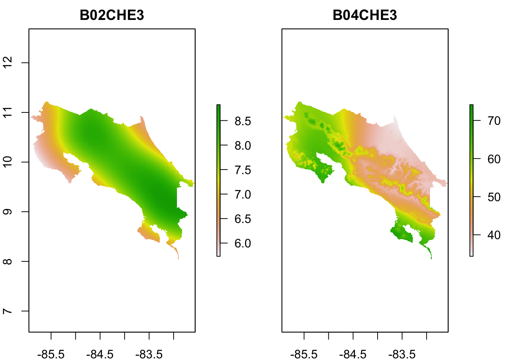

Untitled
library(tidyverse)
library(rio)
library(sf)
library(stars)
library(raster)
library(terra)sal <- import("01_datos/Conductividad_electrica.csv")head(sal)## ID X Y ce V5 V6 V7
## 1 31 544105 181098 0.1 NA Falta muestra 333 NA
## 2 32 533689 182574 0.1 NA 517 datos NA
## 3 33 525760 179443 0.1 NA NA
## 4 34 531280 186305 0.1 NA NA
## 5 35 532794 192734 0.1 NA NA
## 6 36 524312 200735 0.1 NA NAraster_list <- list.files(path = "01_datos/covs", full.names = TRUE)raster_list## [1] "01_datos/covs/B02CHE3.tif" "01_datos/covs/B04CHE3.tif"
## [3] "01_datos/covs/B07CHE3.tif" "01_datos/covs/B13CHE3.tif"
## [5] "01_datos/covs/B14CHE3.tif" "01_datos/covs/BARL10.tif"
## [7] "01_datos/covs/C01MCF5.tif" "01_datos/covs/C02MCF5.tif"
## [9] "01_datos/covs/C03MCF5.tif" "01_datos/covs/C04MCF5.tif"
## [11] "01_datos/covs/C05MCF5.tif" "01_datos/covs/C06MCF5.tif"
## [13] "01_datos/covs/C07MCF5.tif" "01_datos/covs/C08MCF5.tif"
## [15] "01_datos/covs/C09MCF5.tif" "01_datos/covs/C10MCF5.tif"
## [17] "01_datos/covs/C11MCF5.tif" "01_datos/covs/C12MCF5.tif"
## [19] "01_datos/covs/CHAGSW7.tif" "01_datos/covs/CRDMRG5.tif"
## [21] "01_datos/covs/CRUMRG5.tif" "01_datos/covs/CRVMRG5.tif"
## [23] "01_datos/covs/DEMENV5.tif" "01_datos/covs/DV2MRG5.tif"
## [25] "01_datos/covs/DVMMRG5.tif" "01_datos/covs/ENTENV3.tif"
## [27] "01_datos/covs/ES1MOD5.tif" "01_datos/covs/ES2MOD5.tif"
## [29] "01_datos/covs/ES3MOD5.tif" "01_datos/covs/ES4MOD5.tif"
## [31] "01_datos/covs/ES5MOD5.tif" "01_datos/covs/ES6MOD5.tif"
## [33] "01_datos/covs/EVEENV3.tif" "01_datos/covs/EX1MOD5.tif"
## [35] "01_datos/covs/EX2MOD5.tif" "01_datos/covs/EX3MOD5.tif"
## [37] "01_datos/covs/EX4MOD5.tif" "01_datos/covs/EX5MOD5.tif"
## [39] "01_datos/covs/EX6MOD5.tif" "01_datos/covs/EXTGSW7.tif"
## [41] "01_datos/covs/F01USG5.tif" "01_datos/covs/F02USG5.tif"
## [43] "01_datos/covs/F03USG5.tif" "01_datos/covs/F04USG5.tif"
## [45] "01_datos/covs/F05USG5.tif" "01_datos/covs/F06USG5.tif"
## [47] "01_datos/covs/F07USG5.tif" "01_datos/covs/I01MOD4.tif"
## [49] "01_datos/covs/I02MOD4.tif" "01_datos/covs/I03MOD4.tif"
## [51] "01_datos/covs/I04MOD4.tif" "01_datos/covs/I05MOD4.tif"
## [53] "01_datos/covs/I06MOD4.tif" "01_datos/covs/I07MOD4.tif"
## [55] "01_datos/covs/I08MOD4.tif" "01_datos/covs/I09MOD4.tif"
## [57] "01_datos/covs/I10MOD4.tif" "01_datos/covs/I11MOD4.tif"
## [59] "01_datos/covs/I12MOD4.tif" "01_datos/covs/LCEE10.tif"
## [61] "01_datos/covs/M01MOD4.tif" "01_datos/covs/M02MOD4.tif"
## [63] "01_datos/covs/M03MOD4.tif" "01_datos/covs/M04MOD4.tif"
## [65] "01_datos/covs/M05MOD4.tif" "01_datos/covs/M06MOD4.tif"
## [67] "01_datos/covs/M07MOD4.tif" "01_datos/covs/M08MOD4.tif"
## [69] "01_datos/covs/M09MOD4.tif" "01_datos/covs/M10MOD4.tif"
## [71] "01_datos/covs/M11MOD4.tif" "01_datos/covs/M12MOD4.tif"
## [73] "01_datos/covs/MANMCF5.tif" "01_datos/covs/MAXENV3.tif"
## [75] "01_datos/covs/MRNMRG5.tif" "01_datos/covs/N01MOD3.tif"
## [77] "01_datos/covs/N01MSD3.tif" "01_datos/covs/N02MOD3.tif"
## [79] "01_datos/covs/N02MSD3.tif" "01_datos/covs/N03MOD3.tif"
## [81] "01_datos/covs/N03MSD3.tif" "01_datos/covs/N04MOD3.tif"
## [83] "01_datos/covs/N04MSD3.tif" "01_datos/covs/N05MOD3.tif"
## [85] "01_datos/covs/N05MSD3.tif" "01_datos/covs/N06MOD3.tif"
## [87] "01_datos/covs/N06MSD3.tif" "01_datos/covs/N07MOD3.tif"
## [89] "01_datos/covs/N07MSD3.tif" "01_datos/covs/N08MOD3.tif"
## [91] "01_datos/covs/N08MSD3.tif" "01_datos/covs/N09MOD3.tif"
## [93] "01_datos/covs/N09MSD3.tif" "01_datos/covs/N10MOD3.tif"
## [95] "01_datos/covs/N10MSD3.tif" "01_datos/covs/N11MOD3.tif"
## [97] "01_datos/covs/N11MSD3.tif" "01_datos/covs/N12MOD3.tif"
## [99] "01_datos/covs/N12MSD3.tif" "01_datos/covs/NEGMRG5.tif"
## [101] "01_datos/covs/NIRL00.tif" "01_datos/covs/NIRL14.tif"
## [103] "01_datos/covs/OCCGSW7.tif" "01_datos/covs/P01CHE3.tif"
## [105] "01_datos/covs/P02CHE3.tif" "01_datos/covs/P03CHE3.tif"
## [107] "01_datos/covs/P04CHE3.tif" "01_datos/covs/P05CHE3.tif"
## [109] "01_datos/covs/P06CHE3.tif" "01_datos/covs/P07CHE3.tif"
## [111] "01_datos/covs/P08CHE3.tif" "01_datos/covs/P09CHE3.tif"
## [113] "01_datos/covs/P10CHE3.tif" "01_datos/covs/P11CHE3.tif"
## [115] "01_datos/covs/P12CHE3.tif" "01_datos/covs/POSMRG5.tif"
## [117] "01_datos/covs/PRSCHE3.tif" "01_datos/covs/QUAUEA3.tif"
## [119] "01_datos/covs/RANENV3.tif" "01_datos/covs/REDL00.tif"
## [121] "01_datos/covs/REDL14.tif" "01_datos/covs/S03ESA4.tif"
## [123] "01_datos/covs/S04ESA4.tif" "01_datos/covs/S05ESA4.tif"
## [125] "01_datos/covs/S06ESA4.tif" "01_datos/covs/S07ESA4.tif"
## [127] "01_datos/covs/S08ESA4.tif" "01_datos/covs/S09ESA4.tif"
## [129] "01_datos/covs/S10ESA4.tif" "01_datos/covs/SLPMRG5.tif"
## [131] "01_datos/covs/SW1L00.tif" "01_datos/covs/SW1L14.tif"
## [133] "01_datos/covs/SW2L00.tif" "01_datos/covs/SW2L14.tif"
## [135] "01_datos/covs/T01MOD3.tif" "01_datos/covs/T01MSD3.tif"
## [137] "01_datos/covs/T02MOD3.tif" "01_datos/covs/T02MSD3.tif"
## [139] "01_datos/covs/T03MOD3.tif" "01_datos/covs/T03MSD3.tif"
## [141] "01_datos/covs/T04MOD3.tif" "01_datos/covs/T04MSD3.tif"
## [143] "01_datos/covs/T05MOD3.tif" "01_datos/covs/T05MSD3.tif"
## [145] "01_datos/covs/T06MOD3.tif" "01_datos/covs/T06MSD3.tif"
## [147] "01_datos/covs/T07MOD3.tif" "01_datos/covs/T07MSD3.tif"
## [149] "01_datos/covs/T08MOD3.tif" "01_datos/covs/T08MSD3.tif"
## [151] "01_datos/covs/T09MOD3.tif" "01_datos/covs/T09MSD3.tif"
## [153] "01_datos/covs/T10MOD3.tif" "01_datos/covs/T10MSD3.tif"
## [155] "01_datos/covs/T11MOD3.tif" "01_datos/covs/T11MSD3.tif"
## [157] "01_datos/covs/T12MOD3.tif" "01_datos/covs/T12MSD3.tif"
## [159] "01_datos/covs/TMDMOD3.tif" "01_datos/covs/TMNMOD3.tif"
## [161] "01_datos/covs/TPIMRG5.tif" "01_datos/covs/TREL10.tif"
## [163] "01_datos/covs/TWIMRG5.tif" "01_datos/covs/VBFMRG5.tif"
## [165] "01_datos/covs/VDPMRG5.tif" "01_datos/covs/VW1MOD1.tif"
## [167] "01_datos/covs/VW2MOD1.tif" "01_datos/covs/VW3MOD1.tif"
## [169] "01_datos/covs/VW4MOD1.tif" "01_datos/covs/VW5MOD1.tif"
## [171] "01_datos/covs/VW6MOD1.tif"stars
rasters <- read_stars(raster_list)rasters## stars object with 2 dimensions and 171 attributes
## attribute(s):
## B02CHE3.tif B04CHE3.tif B07CHE3.tif B13CHE3.tif
## Min. :3.60 Min. :34.28 Min. : 5.16 Min. : 233.9
## 1st Qu.:7.26 1st Qu.:42.06 1st Qu.: 9.29 1st Qu.: 349.6
## Median :7.91 Median :50.08 Median :10.09 Median : 413.0
## Mean :7.74 Mean :50.67 Mean : 9.92 Mean : 422.9
## 3rd Qu.:8.30 3rd Qu.:59.07 3rd Qu.:10.63 3rd Qu.: 483.0
## Max. :8.82 Max. :74.85 Max. :11.22 Max. :1429.9
## NA's :299305 NA's :299305 NA's :299305 NA's :299305
## B14CHE3.tif BARL10.tif C01MCF5.tif C02MCF5.tif
## Min. : 5.00 Min. : 0.00000 1555 : 114 768 : 150
## 1st Qu.: 30.79 1st Qu.: 0.00000 1703 : 114 855 : 148
## Median : 64.41 Median : 0.00000 1515 : 113 773 : 146
## Mean : 80.28 Mean : 0.07267 1569 : 109 758 : 145
## 3rd Qu.:127.83 3rd Qu.: 0.00000 1748 : 108 793 : 145
## Max. :280.86 Max. :73.00000 1786 : 108 748 : 144
## NA's :299305 (Other):373890 (Other):373678
## C03MCF5.tif C04MCF5.tif C05MCF5.tif C06MCF5.tif
## 5013 : 127 4589 : 275 2723 : 391 1980 : 487
## 5077 : 124 4653 : 269 2738 : 388 1975 : 482
## 5127 : 123 4656 : 268 2743 : 380 1977 : 481
## 5017 : 121 4581 : 266 2727 : 376 2012 : 472
## 5046 : 120 4593 : 266 2635 : 369 2011 : 469
## 5048 : 120 4657 : 265 2690 : 369 2044 : 468
## (Other):373821 (Other):372947 (Other):372283 (Other):371697
## C07MCF5.tif C08MCF5.tif C09MCF5.tif C10MCF5.tif
## 2536 : 375 3062 : 452 2944 : 395 2997 : 373
## 2532 : 370 3048 : 438 2910 : 394 2963 : 364
## 2635 : 361 3087 : 427 2871 : 393 3068 : 362
## 2580 : 359 3078 : 426 2911 : 393 2973 : 361
## 2542 : 355 3086 : 426 2918 : 390 2994 : 361
## 2653 : 355 3110 : 426 2928 : 389 2933 : 360
## (Other):372381 (Other):371961 (Other):372202 (Other):372375
## C11MCF5.tif C12MCF5.tif CHAGSW7.tif CRDMRG5.tif
## 4319 : 184 5126 : 139 256 :270254 Min. :-2903
## 4200 : 177 5032 : 133 254 : 72473 1st Qu.: 0
## 4795 : 177 4942 : 127 101 : 30878 Median : 0
## 4744 : 174 4978 : 127 255 : 321 Mean : -41
## 4857 : 174 5028 : 127 1 : 44 3rd Qu.: 0
## 4335 : 172 3392 : 124 100 : 24 Max. : 1176
## (Other):373498 (Other):373779 (Other): 562
## CRUMRG5.tif CRVMRG5.tif DEMENV5.tif DV2MRG5.tif
## Min. :-1101.0 Min. :-2612.00 Min. : -1.0 Min. :-260.000
## 1st Qu.: 0.0 1st Qu.: 0.00 1st Qu.: 0.0 1st Qu.: 0.000
## Median : 0.0 Median : 0.00 Median : 0.0 Median : 0.000
## Mean : 29.6 Mean : -38.41 Mean : 107.1 Mean : -1.064
## 3rd Qu.: 0.0 3rd Qu.: 0.00 3rd Qu.: 0.0 3rd Qu.: 0.000
## Max. : 2808.0 Max. : 950.00 Max. :3693.0 Max. : 635.000
##
## DVMMRG5.tif ENTENV3.tif ES1MOD5.tif ES2MOD5.tif
## Min. :-253.0000 Min. :13005 Min. : 0.0 Min. : 0.0
## 1st Qu.: 0.0000 1st Qu.:25278 1st Qu.: 549.0 1st Qu.: 690.0
## Median : 0.0000 Median :26434 Median : 766.0 Median : 938.0
## Mean : -0.8596 Mean :26137 Mean : 835.3 Mean : 971.9
## 3rd Qu.: 0.0000 3rd Qu.:27339 3rd Qu.:1067.0 3rd Qu.:1221.0
## Max. : 582.0000 Max. :30150 Max. :2583.0 Max. :2944.0
## NA's :298421 NA's :301748 NA's :301748
## ES3MOD5.tif ES4MOD5.tif ES5MOD5.tif ES6MOD5.tif
## Min. : 0 Min. : 0 Min. : 0 Min. : 0
## 1st Qu.: 916 1st Qu.: 946 1st Qu.: 934 1st Qu.: 781
## Median :1137 Median :1184 Median :1195 Median :1109
## Mean :1155 Mean :1207 Mean :1216 Mean :1115
## 3rd Qu.:1376 3rd Qu.:1442 3rd Qu.:1472 3rd Qu.:1400
## Max. :2510 Max. :3096 Max. :2921 Max. :2786
## NA's :301748 NA's :301748 NA's :301748 NA's :301748
## EVEENV3.tif EX1MOD5.tif EX2MOD5.tif EX3MOD5.tif
## Min. : 6093 Min. :-229 Min. :-329 Min. :-241
## 1st Qu.: 9100 1st Qu.:4157 1st Qu.:4087 1st Qu.:4885
## Median : 9258 Median :4864 Median :4964 Median :5369
## Mean : 9234 Mean :4687 Mean :4724 Mean :5263
## 3rd Qu.: 9391 3rd Qu.:5342 3rd Qu.:5513 3rd Qu.:5769
## Max. :10000 Max. :7276 Max. :7419 Max. :7807
## NA's :298421 NA's :301748 NA's :301748 NA's :301748
## EX4MOD5.tif EX5MOD5.tif EX6MOD5.tif EXTGSW7.tif
## Min. :-118 Min. :-120 Min. : -32 256 :270272
## 1st Qu.:5019 1st Qu.:4980 1st Qu.:4643 1 : 72646
## Median :5494 Median :5470 Median :5092 2 : 31638
## Mean :5382 Mean :5346 Mean :4992 3 : 0
## 3rd Qu.:5883 3rd Qu.:5864 3rd Qu.:5459 4 : 0
## Max. :7663 Max. :7484 Max. :7755 5 : 0
## NA's :301748 NA's :301748 NA's :301748 (Other): 0
## F01USG5.tif F02USG5.tif F03USG5.tif F04USG5.tif
## Min. : 0.00 Min. : 0.00 Min. :0e+00 Min. : 0.00
## 1st Qu.: 0.00 1st Qu.: 0.00 1st Qu.:0e+00 1st Qu.: 0.00
## Median : 0.00 Median : 0.00 Median :0e+00 Median : 0.00
## Mean : 8.76 Mean : 11.97 Mean :8e-02 Mean : 7.43
## 3rd Qu.: 0.00 3rd Qu.: 0.00 3rd Qu.:0e+00 3rd Qu.: 0.00
## Max. :100.00 Max. :100.00 Max. :1e+02 Max. :100.00
## NA's :223926 NA's :223926 NA's :223926 NA's :223926
## F05USG5.tif F06USG5.tif F07USG5.tif I01MOD4.tif
## Min. : 0.0 Min. : 0.00 Min. : 0.00 Min. : 220.0
## 1st Qu.: 0.0 1st Qu.: 0.00 1st Qu.: 0.00 1st Qu.: 501.0
## Median : 0.0 Median : 0.00 Median : 0.00 Median : 588.0
## Mean : 5.2 Mean : 8.64 Mean : 5.36 Mean : 585.9
## 3rd Qu.: 0.0 3rd Qu.: 0.00 3rd Qu.: 0.00 3rd Qu.: 664.0
## Max. :100.0 Max. :100.00 Max. :100.00 Max. :2741.0
## NA's :223926 NA's :223926 NA's :223926 NA's :301745
## I02MOD4.tif I03MOD4.tif I04MOD4.tif I05MOD4.tif
## Min. : 201.0 Min. : 241.0 Min. : 214.0 Min. : 222.0
## 1st Qu.: 558.0 1st Qu.: 656.0 1st Qu.: 675.0 1st Qu.: 652.0
## Median : 650.0 Median : 756.0 Median : 765.0 Median : 735.0
## Mean : 649.8 Mean : 754.7 Mean : 767.7 Mean : 739.8
## 3rd Qu.: 731.0 3rd Qu.: 841.0 3rd Qu.: 853.0 3rd Qu.: 817.0
## Max. :1961.0 Max. :2477.0 Max. :3421.0 Max. :3500.0
## NA's :301745 NA's :301745 NA's :301745 NA's :301745
## I06MOD4.tif I07MOD4.tif I08MOD4.tif I09MOD4.tif
## Min. : 236.0 Min. : 224.0 Min. : 203.0 Min. : 238.0
## 1st Qu.: 612.0 1st Qu.: 617.0 1st Qu.: 637.0 1st Qu.: 613.0
## Median : 693.0 Median : 706.0 Median : 726.0 Median : 694.0
## Mean : 703.7 Mean : 721.2 Mean : 736.1 Mean : 708.4
## 3rd Qu.: 776.0 3rd Qu.: 800.0 3rd Qu.: 816.0 3rd Qu.: 781.0
## Max. :4041.0 Max. :3482.0 Max. :3479.0 Max. :3376.0
## NA's :301745 NA's :301745 NA's :301745 NA's :301745
## I10MOD4.tif I11MOD4.tif I12MOD4.tif LCEE10.tif
## Min. : 211.0 Min. : 197.0 Min. : 138 Min. : 10.0
## 1st Qu.: 559.0 1st Qu.: 517.0 1st Qu.: 492 1st Qu.:210.0
## Median : 638.0 Median : 596.0 Median : 572 Median :210.0
## Mean : 654.9 Mean : 606.6 Mean : 573 Mean :177.4
## 3rd Qu.: 724.0 3rd Qu.: 680.0 3rd Qu.: 648 3rd Qu.:210.0
## Max. :3176.0 Max. :3878.0 Max. :3455 Max. :210.0
## NA's :301745 NA's :301745 NA's :301745
## M01MOD4.tif M02MOD4.tif M03MOD4.tif M04MOD4.tif
## Min. : 136.0 Min. : 135 Min. : 166 Min. : 133
## 1st Qu.: 615.0 1st Qu.: 670 1st Qu.: 779 1st Qu.: 776
## Median : 792.0 Median : 897 Median :1047 Median :1016
## Mean : 821.2 Mean : 951 Mean :1120 Mean :1087
## 3rd Qu.: 964.0 3rd Qu.:1139 3rd Qu.:1366 3rd Qu.:1313
## Max. :2325.0 Max. :2672 Max. :3053 Max. :3334
## NA's :301739 NA's :301114 NA's :301739 NA's :301739
## M05MOD4.tif M06MOD4.tif M07MOD4.tif M08MOD4.tif
## Min. : 133.0 Min. : 120.0 Min. : 122.0 Min. : 134.0
## 1st Qu.: 712.0 1st Qu.: 666.0 1st Qu.: 682.0 1st Qu.: 712.0
## Median : 899.0 Median : 779.0 Median : 795.0 Median : 833.0
## Mean : 944.1 Mean : 794.5 Mean : 807.4 Mean : 841.3
## 3rd Qu.:1109.0 3rd Qu.: 906.0 3rd Qu.: 918.0 3rd Qu.: 960.0
## Max. :3423.0 Max. :2368.0 Max. :2360.0 Max. :2362.0
## NA's :301739 NA's :301739 NA's :301739 NA's :301739
## M09MOD4.tif M10MOD4.tif M11MOD4.tif M12MOD4.tif
## Min. : 88.0 Min. : 116.0 Min. : 110.0 Min. : 117.0
## 1st Qu.: 692.0 1st Qu.: 631.0 1st Qu.: 600.0 1st Qu.: 592.0
## Median : 803.0 Median : 741.0 Median : 718.0 Median : 728.0
## Mean : 813.1 Mean : 748.4 Mean : 721.4 Mean : 737.5
## 3rd Qu.: 922.0 3rd Qu.: 855.0 3rd Qu.: 835.0 3rd Qu.: 858.0
## Max. :2179.0 Max. :1969.0 Max. :2130.0 Max. :2073.0
## NA's :301739 NA's :301739 NA's :301739 NA's :301739
## MANMCF5.tif MAXENV3.tif MRNMRG5.tif N01MOD3.tif
## Min. :4136 Min. : 522 Min. : 0.000 Min. :276.0
## 1st Qu.:6156 1st Qu.:1181 1st Qu.: 0.000 1st Qu.:290.0
## Median :6941 Median :1354 Median : 0.000 Median :292.0
## Mean :6827 Mean :1419 Mean : 3.071 Mean :291.7
## 3rd Qu.:7437 3rd Qu.:1583 3rd Qu.: 0.000 3rd Qu.:294.0
## Max. :9929 Max. :5200 Max. :185.000 Max. :298.0
## NA's :298421 NA's :298629
## N01MSD3.tif N02MOD3.tif N02MSD3.tif N03MOD3.tif
## Min. :-32768 Min. :276.0 Min. :-32768 Min. :276.0
## 1st Qu.:-32768 1st Qu.:290.0 1st Qu.:-32768 1st Qu.:291.0
## Median :-32768 Median :293.0 Median :-32768 Median :293.0
## Mean :-26121 Mean :291.9 Mean :-26122 Mean :292.2
## 3rd Qu.:-32768 3rd Qu.:295.0 3rd Qu.:-32768 3rd Qu.:295.0
## Max. : 98 Max. :299.0 Max. : 73 Max. :299.0
## NA's :298634 NA's :298628
## N03MSD3.tif N04MOD3.tif N04MSD3.tif N05MOD3.tif
## Min. :-32768 Min. :275.0 Min. :-32768 Min. :276.0
## 1st Qu.:-32768 1st Qu.:291.0 1st Qu.:-32768 1st Qu.:291.0
## Median :-32768 Median :294.0 Median :-32768 Median :294.0
## Mean :-26122 Mean :292.5 Mean :-26122 Mean :292.6
## 3rd Qu.:-32768 3rd Qu.:295.0 3rd Qu.:-32768 3rd Qu.:295.0
## Max. : 87 Max. :299.0 Max. : 125 Max. :300.0
## NA's :298651 NA's :298687
## N05MSD3.tif N06MOD3.tif N06MSD3.tif N07MOD3.tif
## Min. :-32768 Min. :274.0 Min. :-32768 Min. :273.0
## 1st Qu.:-32768 1st Qu.:292.0 1st Qu.:-32768 1st Qu.:291.0
## Median :-32768 Median :294.0 Median :-32768 Median :293.0
## Mean :-26121 Mean :292.7 Mean :-26121 Mean :292.1
## 3rd Qu.:-32768 3rd Qu.:295.0 3rd Qu.:-32768 3rd Qu.:294.0
## Max. : 80 Max. :299.0 Max. : 122 Max. :299.0
## NA's :298754 NA's :298714
## N07MSD3.tif N08MOD3.tif N08MSD3.tif N09MOD3.tif
## Min. :-32768 Min. :275.0 Min. :-32768 Min. :274.0
## 1st Qu.:-32768 1st Qu.:291.0 1st Qu.:-32768 1st Qu.:291.0
## Median :-32768 Median :294.0 Median :-32768 Median :293.0
## Mean :-26121 Mean :292.5 Mean :-26121 Mean :292.2
## 3rd Qu.:-32768 3rd Qu.:295.0 3rd Qu.:-32768 3rd Qu.:294.0
## Max. : 123 Max. :299.0 Max. : 103 Max. :300.0
## NA's :298749 NA's :298718
## N09MSD3.tif N10MOD3.tif N10MSD3.tif N11MOD3.tif
## Min. :-32768 Min. :274.0 Min. :-32768 Min. :276.0
## 1st Qu.:-32768 1st Qu.:291.0 1st Qu.:-32768 1st Qu.:290.0
## Median :-32768 Median :293.0 Median :-32768 Median :293.0
## Mean :-26121 Mean :292.1 Mean :-26121 Mean :291.6
## 3rd Qu.:-32768 3rd Qu.:294.0 3rd Qu.:-32768 3rd Qu.:294.0
## Max. : 106 Max. :299.0 Max. : 121 Max. :298.0
## NA's :298746 NA's :298650
## N11MSD3.tif N12MOD3.tif N12MSD3.tif NEGMRG5.tif
## Min. :-32768 Min. :276.0 Min. :-32768 Min. :1130
## 1st Qu.:-32768 1st Qu.:291.0 1st Qu.:-32768 1st Qu.:1551
## Median :-32768 Median :293.0 Median :-32768 Median :1571
## Mean :-26121 Mean :291.7 Mean :-26121 Mean :1549
## 3rd Qu.:-32768 3rd Qu.:294.0 3rd Qu.:-32768 3rd Qu.:1571
## Max. : 101 Max. :298.0 Max. : 86 Max. :1588
## NA's :298636 NA's :223920
## NIRL00.tif NIRL14.tif OCCGSW7.tif P01CHE3.tif
## Min. : 0.00 Min. : 0.00 102 :269889 Min. : 15.32
## 1st Qu.: 0.00 1st Qu.: 0.00 1 : 72325 1st Qu.: 62.19
## Median : 0.00 Median : 0.00 100 : 14088 Median :103.13
## Mean : 16.05 Mean : 16.23 101 : 10737 Mean :122.58
## 3rd Qu.: 0.00 3rd Qu.: 0.00 99 : 4779 3rd Qu.:191.07
## Max. :144.00 Max. :204.00 98 : 769 Max. :757.50
## (Other): 1969 NA's :299305
## P02CHE3.tif P03CHE3.tif P04CHE3.tif P05CHE3.tif
## Min. : 5.87 Min. : 6.56 Min. : 21.19 Min. :155.5
## 1st Qu.: 37.57 1st Qu.: 36.06 1st Qu.: 76.16 1st Qu.:256.1
## Median : 71.61 Median : 75.29 Median :138.31 Median :318.4
## Mean : 84.80 Mean : 81.87 Mean :137.89 Mean :325.0
## 3rd Qu.:135.44 3rd Qu.:121.16 3rd Qu.:189.42 3rd Qu.:381.8
## Max. :286.26 Max. :339.96 Max. :465.15 Max. :600.8
## NA's :299305 NA's :299305 NA's :299305 NA's :299305
## P06CHE3.tif P07CHE3.tif P08CHE3.tif P09CHE3.tif
## Min. :213.3 Min. : 191.4 Min. : 205.1 Min. : 196.2
## 1st Qu.:299.9 1st Qu.: 289.0 1st Qu.: 318.8 1st Qu.: 303.5
## Median :331.2 Median : 336.6 Median : 353.5 Median : 354.4
## Mean :339.8 Mean : 345.8 Mean : 361.9 Mean : 358.4
## 3rd Qu.:372.8 3rd Qu.: 399.7 3rd Qu.: 400.3 3rd Qu.: 402.7
## Max. :908.0 Max. :1441.1 Max. :1188.9 Max. :1065.0
## NA's :299305 NA's :299305 NA's :299305 NA's :299305
## P10CHE3.tif P11CHE3.tif P12CHE3.tif POSMRG5.tif
## Min. :252.6 Min. :101.0 Min. : 36.89 Min. :1161
## 1st Qu.:349.7 1st Qu.:224.0 1st Qu.:122.75 1st Qu.:1542
## Median :399.6 Median :300.7 Median :181.12 Median :1569
## Mean :407.5 Mean :303.2 Mean :201.55 Mean :1548
## 3rd Qu.:459.9 3rd Qu.:380.2 3rd Qu.:288.85 3rd Qu.:1571
## Max. :830.8 Max. :984.2 Max. :986.42 Max. :1597
## NA's :299305 NA's :299305 NA's :299305 NA's :223920
## PRSCHE3.tif QUAUEA3.tif RANENV3.tif REDL00.tif
## Min. :1398 Min. :0 Min. : 215.0 Min. : 0.000
## 1st Qu.:2358 1st Qu.:0 1st Qu.: 679.0 1st Qu.: 0.000
## Median :2920 Median :0 Median : 830.0 Median : 0.000
## Mean :3097 Mean :0 Mean : 963.5 Mean : 2.888
## 3rd Qu.:3786 3rd Qu.:0 3rd Qu.:1039.0 3rd Qu.: 0.000
## Max. :9969 Max. :0 Max. :7561.0 Max. :164.000
## NA's :299305 NA's :298421
## REDL14.tif S03ESA4.tif S04ESA4.tif S05ESA4.tif
## Min. : 0.000 Min. : 0.0 Min. : 0.0 Min. : 0.0
## 1st Qu.: 0.000 1st Qu.:254.0 1st Qu.:254.0 1st Qu.:254.0
## Median : 0.000 Median :254.0 Median :254.0 Median :254.0
## Mean : 2.909 Mean :204.7 Mean :204.7 Mean :204.7
## 3rd Qu.: 0.000 3rd Qu.:254.0 3rd Qu.:254.0 3rd Qu.:254.0
## Max. :191.000 Max. :254.0 Max. :254.0 Max. :254.0
## NA's :2 NA's :3 NA's :7
## S06ESA4.tif S07ESA4.tif S08ESA4.tif S09ESA4.tif
## Min. : 0.0 Min. : 0.0 Min. : 0.0 Min. : 0.0
## 1st Qu.:254.0 1st Qu.:254.0 1st Qu.:254.0 1st Qu.:254.0
## Median :254.0 Median :254.0 Median :254.0 Median :254.0
## Mean :204.7 Mean :204.7 Mean :204.7 Mean :204.7
## 3rd Qu.:254.0 3rd Qu.:254.0 3rd Qu.:254.0 3rd Qu.:254.0
## Max. :254.0 Max. :254.0 Max. :254.0 Max. :254.0
## NA's :26 NA's :9 NA's :32 NA's :12
## S10ESA4.tif SLPMRG5.tif SW1L00.tif SW1L14.tif
## Min. : 0.0 Min. : 0.00 Min. : 0.00 Min. : 0.00
## 1st Qu.:254.0 1st Qu.: 0.00 1st Qu.: 0.00 1st Qu.: 0.00
## Median :254.0 Median : 0.00 Median : 0.00 Median : 0.00
## Mean :204.7 Mean : 5.68 Mean : 12.46 Mean : 12.44
## 3rd Qu.:254.0 3rd Qu.: 7.00 3rd Qu.: 0.00 3rd Qu.: 0.00
## Max. :254.0 Max. :78.00 Max. :140.00 Max. :140.00
## NA's :7 NA's :223926
## SW2L00.tif SW2L14.tif T01MOD3.tif T01MSD3.tif
## Min. : 0.0000 Min. : 0.000 Min. :283.0 Min. : 2.00
## 1st Qu.: 0.0000 1st Qu.: 0.000 1st Qu.:296.0 1st Qu.: 15.00
## Median : 0.0000 Median : 0.000 Median :298.0 Median : 18.00
## Mean : 0.6581 Mean : 0.668 Mean :298.1 Mean : 18.52
## 3rd Qu.: 0.0000 3rd Qu.: 0.000 3rd Qu.:301.0 3rd Qu.: 21.00
## Max. :45.0000 Max. :50.000 Max. :310.0 Max. :159.00
## NA's :298624 NA's :298639
## T02MOD3.tif T02MSD3.tif T03MOD3.tif T03MSD3.tif
## Min. :284.0 Min. : 0.00 Min. :284.0 Min. : 7.00
## 1st Qu.:297.0 1st Qu.:16.00 1st Qu.:298.0 1st Qu.:18.00
## Median :300.0 Median :18.00 Median :301.0 Median :21.00
## Mean :299.9 Mean :18.44 Mean :301.4 Mean :22.22
## 3rd Qu.:303.0 3rd Qu.:21.00 3rd Qu.:305.0 3rd Qu.:25.00
## Max. :314.0 Max. :90.00 Max. :319.0 Max. :96.00
## NA's :298633 NA's :298637 NA's :298625 NA's :298629
## T04MOD3.tif T04MSD3.tif T05MOD3.tif T05MSD3.tif
## Min. :284 Min. : 2.00 Min. :283.0 Min. : 1.00
## 1st Qu.:298 1st Qu.: 20.00 1st Qu.:297.0 1st Qu.: 22.00
## Median :301 Median : 24.00 Median :299.0 Median : 27.00
## Mean :301 Mean : 24.81 Mean :299.6 Mean : 30.41
## 3rd Qu.:304 3rd Qu.: 29.00 3rd Qu.:302.0 3rd Qu.: 36.00
## Max. :321 Max. :154.00 Max. :321.0 Max. :128.00
## NA's :298637 NA's :298662 NA's :298640 NA's :298681
## T06MOD3.tif T06MSD3.tif T07MOD3.tif T07MSD3.tif
## Min. :283.0 Min. : 0.00 Min. :282.0 Min. : 0.00
## 1st Qu.:296.0 1st Qu.: 19.00 1st Qu.:296.0 1st Qu.: 20.00
## Median :298.0 Median : 22.00 Median :297.0 Median : 24.00
## Mean :297.5 Mean : 22.79 Mean :296.7 Mean : 24.63
## 3rd Qu.:300.0 3rd Qu.: 26.00 3rd Qu.:299.0 3rd Qu.: 28.00
## Max. :312.0 Max. :144.00 Max. :314.0 Max. :107.00
## NA's :298671 NA's :298722 NA's :298654 NA's :298751
## T08MOD3.tif T08MSD3.tif T09MOD3.tif T09MSD3.tif
## Min. :223.0 Min. : 1.00 Min. :283.0 Min. : 1.00
## 1st Qu.:296.0 1st Qu.: 21.00 1st Qu.:296.0 1st Qu.: 19.00
## Median :298.0 Median : 24.00 Median :298.0 Median : 22.00
## Mean :297.5 Mean : 25.67 Mean :297.5 Mean : 23.16
## 3rd Qu.:300.0 3rd Qu.: 29.00 3rd Qu.:300.0 3rd Qu.: 26.00
## Max. :315.0 Max. :1419.00 Max. :314.0 Max. :283.00
## NA's :298653 NA's :298709 NA's :298649 NA's :298677
## T10MOD3.tif T10MSD3.tif T11MOD3.tif T11MSD3.tif
## Min. :281.0 Min. : 0.00 Min. :281.0 Min. : 1.00
## 1st Qu.:296.0 1st Qu.: 18.00 1st Qu.:296.0 1st Qu.: 17.00
## Median :298.0 Median : 21.00 Median :297.0 Median : 20.00
## Mean :296.9 Mean : 22.25 Mean :296.5 Mean : 20.82
## 3rd Qu.:299.0 3rd Qu.: 25.00 3rd Qu.:298.0 3rd Qu.: 23.00
## Max. :314.0 Max. :146.00 Max. :308.0 Max. :112.00
## NA's :298670 NA's :298736 NA's :298633 NA's :298662
## T12MOD3.tif T12MSD3.tif TMDMOD3.tif TMNMOD3.tif
## Min. :282.0 Min. : 0.00 Min. :283.0 Min. :275.0
## 1st Qu.:296.0 1st Qu.: 16.00 1st Qu.:297.0 1st Qu.:291.0
## Median :298.0 Median : 19.00 Median :299.0 Median :293.0
## Mean :297.1 Mean : 19.77 Mean :298.3 Mean :292.2
## 3rd Qu.:299.0 3rd Qu.: 23.00 3rd Qu.:301.0 3rd Qu.:294.0
## Max. :307.0 Max. :187.00 Max. :310.0 Max. :298.0
## NA's :298625 NA's :298646 NA's :298621 NA's :298621
## TPIMRG5.tif TREL10.tif TWIMRG5.tif VBFMRG5.tif
## Min. :-1574.0000 Min. : 0.00 Min. : 54.0 Min. : 0.0
## 1st Qu.: 0.0000 1st Qu.: 0.00 1st Qu.:149.0 1st Qu.: 21.0
## Median : 0.0000 Median : 0.00 Median :162.0 Median : 474.0
## Mean : 0.0257 Mean : 13.22 Mean :146.4 Mean : 371.7
## 3rd Qu.: 0.0000 3rd Qu.: 0.00 3rd Qu.:162.0 3rd Qu.: 584.0
## Max. : 2211.0000 Max. :100.00 Max. :162.0 Max. :1173.0
## NA's :223920
## VDPMRG5.tif VW1MOD1.tif VW2MOD1.tif VW3MOD1.tif VW4MOD1.tif
## Min. :-13693 Min. :183 Min. :227.0 Min. :278.0 Min. :307.0
## 1st Qu.: 2784 1st Qu.:354 1st Qu.:388.0 1st Qu.:533.0 1st Qu.:531.0
## Median : 5503 Median :419 Median :476.0 Median :545.0 Median :540.0
## Mean : 5531 Mean :402 Mean :449.7 Mean :534.8 Mean :533.7
## 3rd Qu.: 7831 3rd Qu.:460 3rd Qu.:520.0 3rd Qu.:554.0 3rd Qu.:547.0
## Max. : 23477 Max. :491 Max. :554.0 Max. :582.0 Max. :593.0
## NA's :223920
## VW5MOD1.tif VW6MOD1.tif
## Min. :279.0 Min. :229.0
## 1st Qu.:509.0 1st Qu.:445.0
## Median :533.0 Median :474.0
## Mean :528.3 Mean :457.3
## 3rd Qu.:549.0 3rd Qu.:482.0
## Max. :598.0 Max. :506.0
##
## dimension(s):
## from to offset delta refsys point values
## x 1 546 -87.102 0.0083342 GEOGCS["WGS 84",DATUM["WG... FALSE NULL [x]
## y 1 686 11.2168 -0.00833488 GEOGCS["WGS 84",DATUM["WG... FALSE NULL [y]cr <- st_read("01_datos/mask/CR_cg.gpkg")## Reading layer `CR_cg' from data source `/Users/manuelspinola/Documents/01-Manolo/R_Proyectos/Alban_salinidad/01_datos/mask/CR_cg.gpkg' using driver `GPKG'
## Simple feature collection with 1 feature and 6 fields
## geometry type: POLYGON
## dimension: XY
## bbox: xmin: -85.95189 ymin: 8.043422 xmax: -82.55642 ymax: 11.22162
## CRS: 4326st_crs(cr)## Coordinate Reference System:
## User input: 4326
## wkt:
## GEOGCS["WGS 84",
## DATUM["WGS_1984",
## SPHEROID["WGS 84",6378137,298.257223563,
## AUTHORITY["EPSG","7030"]],
## AUTHORITY["EPSG","6326"]],
## PRIMEM["Greenwich",0,
## AUTHORITY["EPSG","8901"]],
## UNIT["degree",0.0174532925199433,
## AUTHORITY["EPSG","9122"]],
## AUTHORITY["EPSG","4326"]]plot(rasters, axes = TRUE)
rasters_mask <- rasters[cr, crop = TRUE]## although coordinates are longitude/latitude, st_intersects assumes that they are planarplot(rasters_mask[100], axes = TRUE)
terra
raster_list <- list.files(path = "01_datos/prueba", full.names = TRUE)s <- stack(raster_list)s## class : RasterStack
## dimensions : 686, 546, 374556, 2 (nrow, ncol, ncell, nlayers)
## resolution : 0.008334203, 0.008334884 (x, y)
## extent : -87.10198, -82.55151, 5.49909, 11.21682 (xmin, xmax, ymin, ymax)
## crs : +proj=longlat +datum=WGS84 +no_defs +ellps=WGS84 +towgs84=0,0,0
## names : B02CHE3, B04CHE3s_crop <- crop(s, cr)s_mask <- mask(s_crop, cr)plot(s_mask)